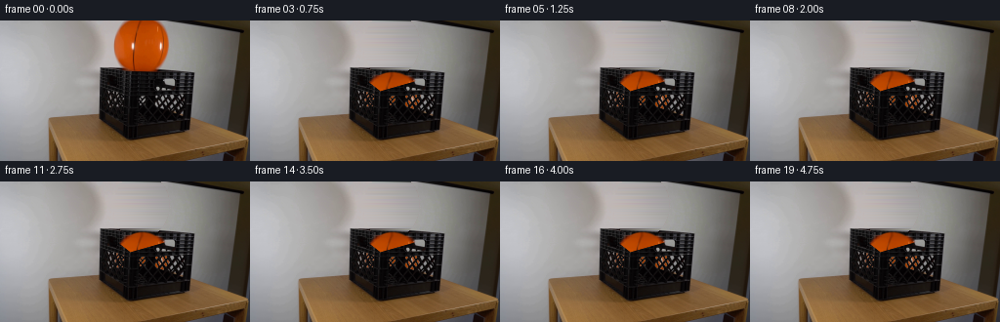
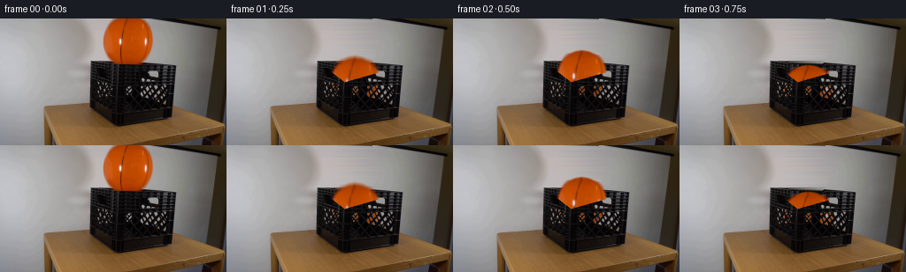

CODING AGENTS AS PIXEL WORLD MODELS
traex/GPT-6.1-Sol · 0013
点击播放 · 原生 RGB 像素
逐轮保存的候选
回放视频、检查图与代码变化。
每份候选均可单独播放。实际图片检查记录在下方工具轨迹中。
候选 01播放与检查图
点击播放 · 原生 RGB 像素


展开代码变化
--- 上一保存版本
+++ 本次保存版本
@@ -0,0 +1,141 @@
+from pathlib import Path
+import numpy as np
+from PIL import Image
+from scipy.ndimage import gaussian_filter, map_coordinates
+from scipy.interpolate import PchipInterpolator
+import artifact_io
+
+ROOT = Path(__file__).resolve().parent
+H, W = 144, 256
+Y, X = np.mgrid[:H, :W].astype(float)
+FIRST = np.array(Image.open(ROOT/'first_frame.png').convert('RGB'))
+F = FIRST.astype(float)
+CX, CY = 144.45, 24.8
+RX, RY = 27.35, 28.4
+
+
+def make_assets():
+ # Reconstruct the small portion of the stationary wall hidden by the sphere.
+ back = F.copy()
+ anchors = np.array([100, 108, 112, 114, 175, 180, 190, 202])
+ wall = F.copy()
+ for y in range(56):
+ vals = np.array([F[y, x-1:x+2].mean(0) for x in anchors])
+ wall[y] = PchipInterpolator(anchors, vals, axis=0)(np.arange(W))
+ # The rear lip slopes away from the camera; retain its narrow dark rim.
+ edge = 48.0 + .048*(X-103)
+ rng = np.random.default_rng(13)
+ grain = gaussian_filter(rng.normal(size=(H,W)), .45)
+ crate = np.zeros_like(F)
+ level = 17 + 4*np.sin(X*1.51) + 5*np.sin(Y*1.65) + 1.5*grain
+ rim = 67*np.exp(-((Y-edge)/.65)**2)
+ for c in range(3):
+ crate[...,c] = np.clip(level + rim + (1 if c==0 else 0), 4,100)
+ blend = np.clip((Y-edge+.45)/.9,0,1)
+ rebuilt = wall*(1-blend[...,None])+crate*blend[...,None]
+ # Color fringe is removed as well as the opaque ball.
+ d = F[...,0]-F[...,1]
+ rad = ((X-CX)/30.4)**2 + ((Y-CY)/33.0)**2
+ remove = (rad < 1.05) & (Y < 55) & ((d>9)|((((X-CX)/RX)**2+((Y-CY)/RY)**2)<1.04))
+ back[remove] = rebuilt[remove]
+ # Derive a soft optical matte from the orange chroma. The printing is
+ # inside the opaque core, not a hole in the silhouette.
+ bgdiff = rebuilt[...,0]-rebuilt[...,1]
+ alpha = np.clip((d-bgdiff)/109.,0,1)
+ core = ((X-CX)/26.0)**2+((Y-CY)/26.2)**2
+ alpha[core < 1] = 1
+ alpha[(rad>1.1)|(Y>54)] = 0
+ alpha[(X<112)|(X>178)] = 0
+ fg = (F-rebuilt*(1-alpha[...,None]))/np.maximum(alpha[...,None],.025)
+ fg = np.clip(fg,0,255)
+ # Extend the four cropped pixels at the north pole using the existing
+ # orange surface, so the sphere remains whole after dropping into frame.
+ ext = 8
+ tex = np.pad(fg, ((ext,0),(0,0),(0,0)),mode='edge')
+ atex = np.pad(alpha, ((ext,0),(0,0)),mode='edge')
+ for j in range(ext):
+ y = j-ext
+ r = np.sqrt(((np.arange(W)-CX)/RX)**2+((y-CY)/RY)**2)
+ aa = np.clip((1.028-r)*19,0,1)
+ atex[j] = aa
+ tex[j] = fg[0]
+ # Front walls occlude the ball except at the crate's real lattice holes.
+ frontlip = np.where(X < 133, 48.8+(X-103)*.77,
+ 72.0-(X-133)*.283)
+ front = np.clip((Y-frontlip+.45)/.8,0,1)
+ front *= ((X>=102)&(X<=198)&(Y<125))
+ lum = F.mean(2)
+ holes = np.clip((lum-39)/104,0,1)
+ holes *= ((Y>=72)&(Y<=99)&(X>105)&(X<191))
+ # Small contact shading lies inside the crate, not on the wall.
+ return back, tex, atex, front, holes
+
+
+def height(t):
+ # Free fall, then successively damped rebounds from the crate bottom.
+ g = 1500.0
+ rest = 80.0
+ h = rest-CY
+ impact = np.sqrt(2*h/g)
+ if t < impact:
+ return CY+.5*g*t*t, g*t, 0.0
+ t -= impact
+ v = .59*np.sqrt(2*g*h)
+ while v > 6:
+ duration = 2*v/g
+ if t <= duration:
+ pos = rest-v*t+.5*g*t*t
+ squash = max(0.,1-t/.026)*.055
+ return pos,-v+g*t,squash
+ t -= duration
+ v *= .48
+ return rest,0.,0.
+
+
+def draw_ball(t, assets):
+ back, tex, atex, front, holes = assets
+ cy, vy, squash = height(t)
+ cx = CX + .7*(1-np.exp(-t*3))
+ angle = .026*(1-np.exp(-t*2.5))
+ ca,sa = np.cos(angle),np.sin(angle)
+ xx = (X-cx)/(1+squash)
+ yy = (Y-cy)/(1-squash)
+ sx = CX+ca*xx+sa*yy
+ sy = CY-sa*xx+ca*yy+8
+ a = map_coordinates(atex,[sy,sx],order=1,mode='constant',cval=0)
+ rgb = np.stack([map_coordinates(tex[...,c],[sy,sx],order=1,mode='nearest') for c in range(3)],-1)
+ # Through the plastic lattice, the recessed surface is softly shadowed.
+ visibility = (1-front)+front*holes
+ a *= visibility
+ shade = 1-.20*front
+ rgb *= shade[...,None]
+ out = back.copy()
+ # Localized ambient occlusion below the ball, restricted to the opening.
+ closeness = np.clip((cy-47)/33,0,1)
+ shadow = .14*closeness*np.exp(-((X-cx)/25)**2-((Y-72)/6)**2)*(1-front)
+ out *= (1-shadow[...,None])
+ out = out*(1-a[...,None])+rgb*a[...,None]
+ return np.clip(out,0,255)
+
+
+def main():
+ assets = make_assets()
+ frames = [FIRST]
+ for i in range(1,20):
+ t=i/4
+ cy,vy,sq=height(t)
+ # A short shutter interval gives fast falling surfaces natural blur,
+ # while the locked-off background and crate stay perfectly sharp.
+ n=5 if abs(vy)>90 else 1
+ exposure=1/90
+ times=t+np.linspace(-exposure/2,exposure/2,n) if n>1 else [t]
+ rgb=np.mean([draw_ball(float(s),assets) for s in times],axis=0)
+ frames.append(np.clip(np.rint(rgb),0,255).astype(np.uint8))
+ frames=np.stack(frames)
+ artifact_io.save(frames,ROOT)
+ np.save(ROOT/'.tmp'/'candidate_frames.npy',frames)
+ print('Saved',frames.shape,frames.dtype)
+ print('Ball trajectory:',[(i,round(height(i/4)[0],2)) for i in range(10)])
+
+if __name__=='__main__':
+ main()
可观测工具轨迹
实际执行的命令与返回图片。
命令 1exit 0
/bin/bash -lc 'ls -la && cat prompt.txt && cat GENERATION_RULES.md'
命令 2exit 0
/bin/bash -lc "cat artifact_io.py && python - <<'PY'
from PIL import Image
import numpy as np
im=np.array(Image.open('first_frame.png'))
print(im.shape)
# small image mapped to named color categories
for y in range(0,144,3):
s=''
for x in range(0,256,3):
r,g,b=im[y:y+3,x:x+3].mean((0,1))
if r>g*1.4 and r>b*1.6 and r>100: c='O'
elif max(r,g,b)<45:c='#'
elif max(r,g,b)<85:c='x'
elif r>g*1.14 and g>b*1.12: c='w'
elif min(r,g,b)>195:c='.'
elif b>r*1.14:c='B'
else:c='-'
s+=c
print(s)
PY"命令 3exit 0
/bin/bash -lc "python - <<'PY'
from PIL import Image
import numpy as np
im=np.asarray(Image.open('first_frame.png'))
chars=' .:-=+*#%@'
for y in range(44,127,2):
print(f'{y:3}', ''.join(chars[int(np.mean(im[y:y+2,x:x+1]))*10//256] for x in range(98,202)))
print('BALL AREA')
for y in range(0,58,2):
print(f'{y:3}', ''.join(chars[int(np.mean(im[y:y+2,x:x+1]))*10//256] for x in range(109,185)))
print('rgb sample y44-75')
for y in [45,48,50,52,54,56,58,60,64,68,72]:
print(y,[(x,tuple(im[y,x])) for x in range(100,201,5)])
PY"命令 4exit 0
/bin/bash -lc "python - <<'PY'
import numpy as np
from PIL import Image
im=np.array(Image.open('first_frame.png'))
# black box printed as 3 independent channels quantities and character levels
for y in range(45,124):
if y%2: continue
s=''
for x in range(100,199):
r,g,b=map(int,im[y,x]);v=(r+g+b)/3
s+= ('O' if r>g*1.8 and r>b*2 and r>65 else ' .,:;+*ox#@'[min(9,int(v/20))])
print(f'{y:3} '+s)
# orange segmentation row bounds
m=(im[:,:,0].astype(float)>im[:,:,1]*1.45)&(im[:,:,0]>100)&(im[:,:,1]>20)&(np.indices((144,256))[0]<55)
for y in range(0,55):
xs=np.where(m[y])[0]
if len(xs):print(y,xs.min(),xs.max())
PY"命令 5exit 0
/bin/bash -lc "python - <<'PY'
import numpy as np
from PIL import Image
im=np.array(Image.open('first_frame.png'))
f=im.astype(float);v=f.mean(2)
# formatted coordinates of horizontal gradient ridges in crate
for x in range(103,198,4):
a=v[46:100,x]
print(x,' '.join(f'{i+46}:{v[i+46,x]:.0f}' for i in range(len(a)) if v[i+46,x]>55))
# layout thresholds bright 55 with mark blacks orange
for y in range(46,92):
s=''
for x in range(102,199):
r,g,b=f[y,x];vv=(r+g+b)/3
s+= 'O' if r-g>45 else 'X' if vv>120 else '+' if vv>65 else ':' if vv>35 else '.' if vv>20 else ' '
print(f'{y:2} {s}')
PY"命令 6exit 0
/bin/bash -lc "python - <<'PY'
from PIL import Image
import numpy as np
im=np.asarray(Image.open('first_frame.png')).astype(float)
# table of averaged RGB brightness in 3x3 blocks for crate
v=im.mean(2)
print(' '+''.join(str((x//10)%10) for x in range(100,201,2)))
print(' '+''.join(str(x%10) for x in range(100,201,2)))
for y in range(46,125,2):
print(f'{y:3} ', ''.join(' ' if v[y:y+2,x:x+2].mean()<18 else '.' if v[y:y+2,x:x+2].mean()<30 else ':' if v[y:y+2,x:x+2].mean()<50 else '+' if v[y:y+2,x:x+2].mean()<85 else 'o' if v[y:y+2,x:x+2].mean()<120 else 'X' if v[y:y+2,x:x+2].mean()<150 else '#' for x in range(100,201,2)))
print('column color')
for x in [105,115,128,133,140,145,155,165,173,190,197]:
print(x, [(y,tuple(np.round(im[y:y+2,x:x+2].mean((0,1))).astype(int))) for y in range(46,124,4)])
PY"命令 7exit 0
/bin/bash -lc "python - <<'PY'
from PIL import Image
import numpy as np
im=np.asarray(Image.open('first_frame.png'))
for y in range(0,51,5):
print(y,[(x,tuple(im[y,x])) for x in [95,100,105,110,114,115,116,117,120,125,145,166,170,172,173,174,175,176,180]])
PY"命令 8exit 0
/bin/bash -lc "python - <<'PY'
import numpy as np
from PIL import Image
from scipy.optimize import least_squares
f=np.array(Image.open('first_frame.png')).astype(float)
for thresh in [15,35,65,85]:
yy=[];ll=[];rr=[]
for y in range(0,52):
xs=np.flatnonzero((f[y,:,0]-f[y,:,1]>thresh)&(np.arange(256)>110)&(np.arange(256)<180))
if len(xs):yy.append(y);ll.append(xs.min());rr.append(xs.max())
yy=np.array(yy);ll=np.array(ll);rr=np.array(rr)
def fun(p):
cx,cy,rx,ry=p;rad=rx*np.sqrt(np.clip(1-((yy-cy)/ry)**2,0,None))
return np.r_[cx-rad-ll,cx+rad-rr]
fit=least_squares(fun,[144.5,24,27.5,28.5],bounds=([140,20,25,26],[150,28,32,33]))
print(thresh,fit.x, np.mean(fun(fit.x)**2)**.5)
PY"命令 9exit 0
/bin/bash -lc "python - <<'PY'
from PIL import Image
import numpy as np
f=np.array(Image.open('first_frame.png')).astype(float)
v=f.mean(2)
for x in range(99,204):
ys=np.where(v[40:76,x]<50)[0]+40
if len(ys): print(x,ys.min(),end='; ')
print()
# slope ridge intensity around possible front edge y60-77
for x in range(120,174,2):
print(x,[(y,round(v[y,x])) for y in range(55,76)])
PY"命令 10exit 0
/bin/bash -lc "cat > generate.py <<'PY'
from pathlib import Path
import numpy as np
from PIL import Image
from scipy.ndimage import gaussian_filter, map_coordinates
from scipy.interpolate import PchipInterpolator
import artifact_io
ROOT = Path(__file__).resolve().parent
H, W = 144, 256
Y, X = np.mgrid[:H, :W].astype(float)
FIRST = np.array(Image.open(ROOT/'first_frame.png').convert('RGB'))
F = FIRST.astype(float)
CX, CY = 144.45, 24.8
RX, RY = 27.35, 28.4
def make_assets():
# Reconstruct the small portion of the stationary wall hidden by the sphere.
back = F.copy()
anchors = np.array([100, 108, 112, 114, 175, 180, 190, 202])
wall = F.copy()
for y in range(56):
vals = np.array([F[y, x-1:x+2].mean(0) for x in anchors])
wall[y] = PchipInterpolator(anchors, vals, axis=0)(np.arange(W))
# The rear lip slopes away from the camera; retain its narrow dark rim.
edge = 48.0 + .048*(X-103)
rng = np.random.default_rng(13)
grain = gaussian_filter(rng.normal(size=(H,W)), .45)
crate = np.zeros_like(F)
level = 17 + 4*np.sin(X*1.51) + 5*np.sin(Y*1.65) + 1.5*grain
rim = 67*np.exp(-((Y-edge)/.65)**2)
for c in range(3):
crate[...,c] = np.clip(level + rim + (1 if c==0 else 0), 4,100)
blend = np.clip((Y-edge+.45)/.9,0,1)
rebuilt = wall*(1-blend[...,None])+crate*blend[...,None]
# Color fringe is removed as well as the opaque ball.
d = F[...,0]-F[...,1]
rad = ((X-CX)/30.4)**2 + ((Y-CY)/33.0)**2
remove = (rad < 1.05) & (Y < 55) & ((d>9)|((((X-CX)/RX)**2+((Y-CY)/RY)**2)<1.04))
back[remove] = rebuilt[remove]
# Derive a soft optical matte from the orange chroma. The printing is
# inside the opaque core, not a hole in the silhouette.
bgdiff = rebuilt[...,0]-rebuilt[...,1]
alpha = np.clip((d-bgdiff)/109.,0,1)
core = ((X-CX)/26.0)**2+((Y-CY)/26.2)**2
alpha[core < 1] = 1
alpha[(rad>1.1)|(Y>54)] = 0
alpha[(X<112)|(X>178)] = 0
fg = (F-rebuilt*(1-alpha[...,None]))/np.maximum(alpha[...,None],.025)
fg = np.clip(fg,0,255)
# Extend the four cropped pixels at the north pole using the existing
# orange surface, so the sphere remains whole after dropping into frame.
ext = 8
tex = np.pad(fg, ((ext,0),(0,0),(0,0)),mode='edge')
atex = np.pad(alpha, ((ext,0),(0,0)),mode='edge')
for j in range(ext):
y = j-ext
r = np.sqrt(((np.arange(W)-CX)/RX)**2+((y-CY)/RY)**2)
aa = np.clip((1.028-r)*19,0,1)
atex[j] = aa
tex[j] = fg[0]
# Front walls occlude the ball except at the crate's real lattice holes.
frontlip = np.where(X < 133, 48.8+(X-103)*.77,
72.0-(X-133)*.283)
front = np.clip((Y-frontlip+.45)/.8,0,1)
front *= ((X>=102)&(X<=198)&(Y<125))
lum = F.mean(2)
holes = np.clip((lum-39)/104,0,1)
holes *= ((Y>=72)&(Y<=99)&(X>105)&(X<191))
# Small contact shading lies inside the crate, not on the wall.
return back, tex, atex, front, holes
def height(t):
# Free fall, then successively damped rebounds from the crate bottom.
g = 1500.0
rest = 80.0
h = rest-CY
impact = np.sqrt(2*h/g)
if t < impact:
return CY+.5*g*t*t, g*t, 0.0
t -= impact
v = .59*np.sqrt(2*g*h)
while v > 6:
duration = 2*v/g
if t <= duration:
pos = rest-v*t+.5*g*t*t
squash = max(0.,1-t/.026)*.055
return pos,-v+g*t,squash
t -= duration
v *= .48
return rest,0.,0.
def draw_ball(t, assets):
back, tex, atex, front, holes = assets
cy, vy, squash = height(t)
cx = CX + .7*(1-np.exp(-t*3))
angle = .026*(1-np.exp(-t*2.5))
ca,sa = np.cos(angle),np.sin(angle)
xx = (X-cx)/(1+squash)
yy = (Y-cy)/(1-squash)
sx = CX+ca*xx+sa*yy
sy = CY-sa*xx+ca*yy+8
a = map_coordinates(atex,[sy,sx],order=1,mode='constant',cval=0)
rgb = np.stack([map_coordinates(tex[...,c],[sy,sx],order=1,mode='nearest') for c in range(3)],-1)
# Through the plastic lattice, the recessed surface is softly shadowed.
visibility = (1-front)+front*holes
a *= visibility
shade = 1-.20*front
rgb *= shade[...,None]
out = back.copy()
# Localized ambient occlusion below the ball, restricted to the opening.
closeness = np.clip((cy-47)/33,0,1)
shadow = .14*closeness*np.exp(-((X-cx)/25)**2-((Y-72)/6)**2)*(1-front)
out *= (1-shadow[...,None])
out = out*(1-a[...,None])+rgb*a[...,None]
return np.clip(out,0,255)
def main():
assets = make_assets()
frames = [FIRST]
for i in range(1,20):
t=i/4
cy,vy,sq=height(t)
# A short shutter interval gives fast falling surfaces natural blur,
# while the locked-off background and crate stay perfectly sharp.
n=5 if abs(vy)>90 else 1
exposure=1/90
times=t+np.linspace(-exposure/2,exposure/2,n) if n>1 else [t]
rgb=np.mean([draw_ball(float(s),assets) for s in times],axis=0)
frames.append(np.clip(np.rint(rgb),0,255).astype(np.uint8))
frames=np.stack(frames)
artifact_io.save(frames,ROOT)
np.save(ROOT/'.tmp'/'candidate_frames.npy',frames)
print('Saved',frames.shape,frames.dtype)
print('Ball trajectory:',[(i,round(height(i/4)[0],2)) for i in range(10)])
if __name__=='__main__':
main()
PY
python generate.py"命令 11exit 0
/bin/bash -lc "python - <<'PY'
from PIL import Image
import numpy as np
for i in [0,1,2,3,4]:
f=np.asarray(Image.open(f'frames/{i:02d}.png')).astype(float)
print('\\nFRAME',i)
for y in range(0,110,2):
s=''
for x in range(102,180):
r,g,b=f[y,x];v=(r+g+b)/3
s+='O' if r-g>45 else '+' if v>135 else ':' if v>65 else '.' if v>25 else ' '
print(f'{y:3} {s}')
print('orange count',np.count_nonzero((f[...,0]-f[...,1]>45)&(np.indices((144,256))[0]<100)))
# residual original ball region
PY"命令 12exit 0
/bin/bash -lc "python - <<'PY'
from pathlib import Path
import numpy as np
from PIL import Image
f=np.stack([np.array(Image.open(p)) for p in sorted(Path('frames').glob('*.png'))])
a=np.array(Image.open('first_frame.png'))
assert f.shape==(20,144,256,3) and f.dtype==np.uint8
assert np.array_equal(f[0],a)
p=np.load('pixels.npz')['pixels']
assert p.shape==(144,256,20)
print('Validated: 20 RGB frames, 256Ã144, first frame pixel-identical.')
print('Artifacts:',[(str(p),p.stat().st_size) for p in [Path('pixels.npz'),Path('index.html'),Path('generate.py')]])
PY"保存候选 1 份；完成命令 12 次；可验证图片返回 0 张。原始 API 响应与完整日志保留在本地。